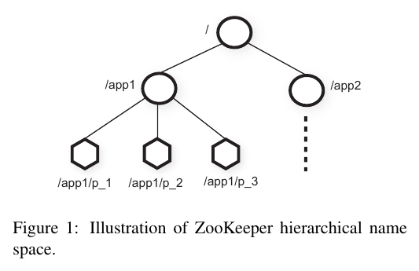
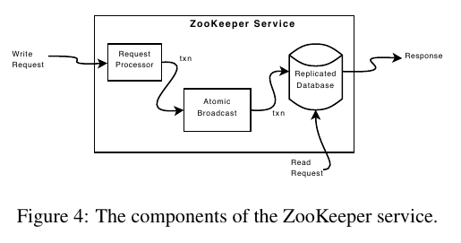

ZooKeeper: Wait-free coordination for Internet-scale systems
http://research.yahoo.com/pub/3280 @ 2010
Table of Contents
1 Abstract
2 Introduction
- coordination方面具体应用包括: 1)configuration. 2)group-membership and leader election. 3)lock-service. etc.
- coordination-kernel. # 没有直接提供具体primitives, 而是允许客户通过API实现自己的primitives.
- wait-free operation. # 相对于blocking方式来说不管是服务端实现和客户端使用都会更加简单.
- order-guarantee. # 所有客户端(异步)操作顺序保证FIFO, 服务端写入都是linearizable writes(zab = zookeeper atomic broadcast)
- watch mechanism. # 解决blocking方式可以完成但是wait-free不可以完成问题.
3 The ZooKeeper service
znode
zookeeper上的数据组织成为一个类似于文件系统的树(但是实际上不区分目录和文件的). 节点称为znode, 节点上有数据, 所有节点下面都可以挂子节点. znode分为两种类型: 1) regular 2) ephemeral. 如果创建ephemeral节点的client session结束的话, 那么这个节点会自动删除. 在创建znode时候还可以指定一个sequential标记, 使用这个标记创建znode时候会在znode name之后添加一个id. 这个id是在此节点的父节点下面自增的.

client在读取znode的时候可以设置watch标记. 那么如果这个znode发生变化的话(znode event), client会被通知到. 通知不会携带任何数据, 并且只会触发一次. 如果session关闭的话那么watch会被自动删除. zookeeper也提供了session event用来通知client和zookeeper连接失效.
#note: 结合后面来看"连接失效"应该有两个意思: 1) session失效那么需要重新连接 2) 和原来server断开切换到另外一个server. 对于情况1) client需要重新发起连接. 情况2) client可以自动处理. 但是无论如何所有watch标记都会失效.
session
A client connects to ZooKeeper and initiates a session. Sessions have an associated timeout. Zoo-Keeper considers a client faulty if it does not receive any-thing from its session for more than that timeout. A ses-sion ends when clients explicitly close a session handle or ZooKeeper detects that a clients is faulty. Within a ses-sion, a client observes a succession of state changes that reflect the execution of its operations. Sessions enable client to move transparently from one server to another within a ZooKeeper ensemble, and hence persist across ZooKeeper servers. # session有超时时间. 如果在超时时间内没有收到client响应的话就认为client出现错误. 如果zk认为client出错或者是client主动关闭, 那么session就此结束. 但是如果是zookeeper本身节点出现故障的话, session可以自动完成切换.
client API
All methods have both a synchronous and an asyn-chronous version available through the API.
- create(path, data, flags)
- delete(path, version) # only when version matches. set version = -1 to match any.
- exists(path, watch)
- getData(path, watch)
- setData(path, data, version)
- getChildren(path, watch)
- sync(path) # block直到pending writes全部作用上.
guarantees
ZooKeeper has two basic ordering guarantees:
- Linearizable writes: all requests that update the state of ZooKeeper are serializable and respect prece-dence; # writes是全局有序的.
- FIFO client order: all requests from a given client are executed in the order that they were sent by the client. # client操作顺序是FIFO.
- notification order: if a client is watching for a change, the client will see the notification event before it sees the new state of the system after the change is made. # client关注节点A, 而另外一个节点先修改A然后修改B. 那么client是先被通知A然后才能读取到B的最新内容.
4 ZooKeeper Applications
5 ZooKeeper Implementation

- 写操作(trx)经过atomic_broadcast广播到所有节点并且定序, 然后作用在replicated_database上. 读操作直接读取本地replicated_database.
- replicated_database是in memory的数据库系统, 所有trx在作用到database之前都会被记录到WAL.
- trx满足幂等性(idempotent). Since the messaging layer is atomic, we guarantee that the local replicas never diverge, although at any point in time some servers may have applied more transactions than others. #note: 下面给出了解释. zab在recovery阶段可能造成trx重复发送.
- During normal operation Zab does deliver all mes-sages in order and exactly once, but since Zab does not persistently record the id of every message delivered, Zab may redeliver a message during recovery.
- replicated_database定期会做snapshot. 但是这种snapshot并不精确, 所以成为fuzzy snapshots, 因为这个snapshot生成并不是一个atomic操作. 这里好理解为什么在recovery阶段会有重复trx发送或者是作用.
- When a server processes a write request, it also sends out and clears notifications relative to any watch that corre-sponds to that update. Servers process writes in order and do not process other writes or reads concurrently. This ensures strict succession of notifications. Note that servers handle notifications locally. Only the server that a client is connected to tracks and triggers notifications for that client. # server只会通知连接到自己的client.
- client每次和zookeeper交互返回都会得到一个zxid反应当前client所获取的数据. 如果在连接时候server发现自己的zxid比client zxid小的话那么就会拒绝连接, 直到这个server追上或者是client连接其他server.
- 为了保持session, 假设session timeout是x ms的话, 那么在session idle之后的x/3ms会发送一个心跳, 如果在2x/3 ms没有收到这个心跳的返回的话, 那么就会尝试切换到另外一个server发送心跳.